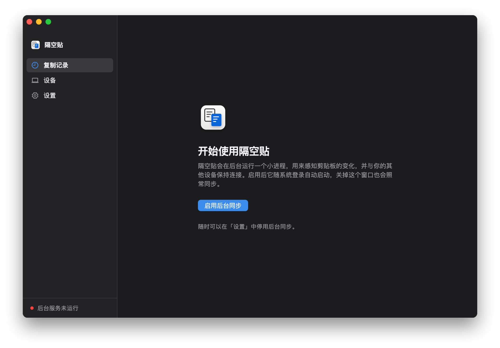

第 1 步
在每台电脑上安装 App
要同步的每台电脑都装一个，Mac、Windows、Linux 可以混用。
Mac
- 下载 DMG，打开后把 CopySync 拖进「应用程序」。Apple 芯片与 Intel 芯片各有一版，下载页会告诉你怎么选。
- 从「应用程序」里打开。第一次会提示「无法验证开发者」：到「系统设置 → 隐私与安全性」，点页面下方的「仍要打开」。
- 点「启用后台同步」。系统询问是否允许读取剪贴板、能否查找本地网络上的设备时，都选择允许。
Windows
- 运行 CopySync-Setup.exe，不需要管理员权限。提示「Windows 已保护你的电脑」时，点「更多信息」，再点「仍要运行」。
- 打开 CopySync，点「启用后台同步」。防火墙询问时选择允许。关掉窗口后它在右下角的托盘里继续运行。
Linux
- Ubuntu、Debian 等安装 .deb；其他发行版解压 tar.gz，运行里面的
install.sh。 - 从应用菜单里打开 CopySync，点「启用后台同步」。

第 2 步
选一种连接方式
两台电脑在同一个网络里时，什么都不用部署。跨网络时，要靠公网服务器或 Tailscale 找到彼此，复制的内容不会存在上面。
同一网络
公网服务器
- 在云厂商的安全组里放行 TCP 8787、UDP 3478 和 UDP 32768–60999。
- ssh 登录服务器，下载并运行安装脚本，带上它的公网 IP：
sudo ./install.sh 公网IP。 - 在每台电脑的「设置」里填服务器地址
ws://公网IP:8787/signal，按回车，再配对。
在浏览器里打开 http://公网IP:8787/healthz，能看到 ok 就装好了。
- 适合
- 电脑分散在不同的网络里，想在哪儿都能同步。跨网络时最省心。
- 要准备
- 一台有公网 IP 的 Linux 云主机，最低配置就够，需要 root。
- 要注意
- 云主机要花钱。打不通直连时走中转，速度受服务器带宽限制。国内域名没有备案时，客户端要填 IP。
Tailscale
- 每台电脑装上 Tailscale，登录同一个账号。
- 在要配对的那台电脑上运行
tailscale ip -4，记下 100 开头的地址。 - 配对时，输入配对码的那台点「不在同一网段？」，填上这个地址。
不需要服务器。Tailscale 地址不会变，只在配对时输入一次。
Tailscale 教程 →- 适合
- 电脑在不同的网络里，又没有公网服务器。
- 要准备
- 每台电脑都装 Tailscale，登录同一个账号。
- 要注意
- 所有用 CopySync 的电脑都要装 Tailscale 并保持连接。Tailscale 自己打不通时经境外中转，在国内会慢。
第 3 步
把两台电脑配对
每两台电脑之间配对一次，之后就不用再管了。
- 在一台电脑上打开「设备」，点「添加设备」，会显示一个 6 位配对码，5 分钟内有效，下面是这台电脑的地址。
- 在另一台电脑上同样点「添加设备」，切到「输入配对码」，输入它。不在同一网段、或者用 Tailscale 时，点「不在同一网段？」，再填上对方的地址。
- 两块屏幕会显示同样的两行安全指纹。逐字核对一致后，再点确认。这一步防止有人在中间冒充你的设备，不要跳过。


复制试试。
在一台电脑上复制文字、图片或文件，到另一台按 ⌘V 或 Ctrl+V。两边复制过的内容都在「复制记录」里。
遇到问题：同一网络的常见问题 · Tailscale 的常见问题 · 公网服务器的常见问题 · 反馈问题